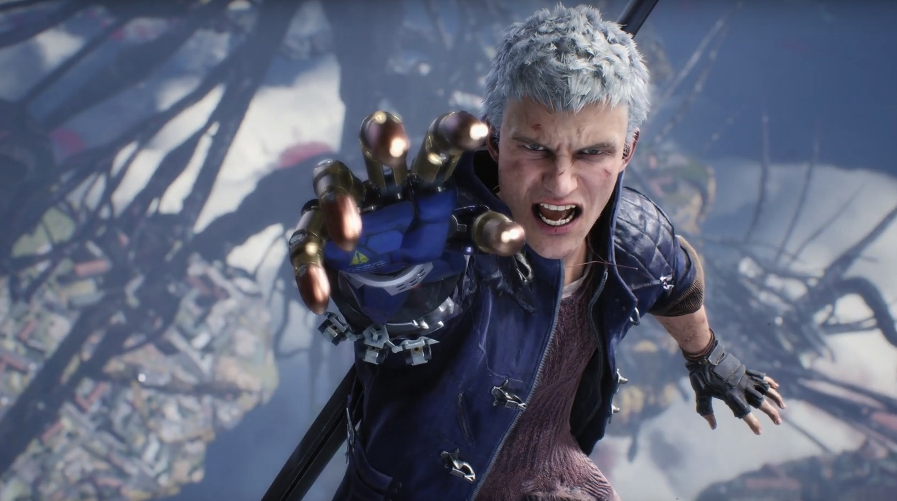
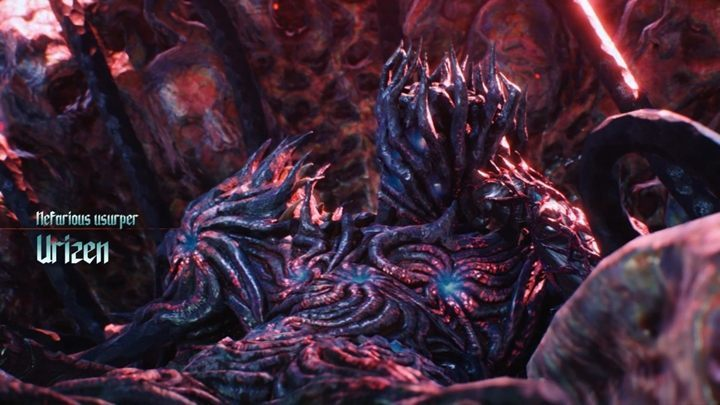
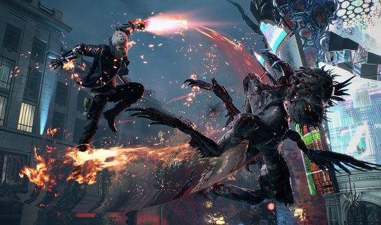
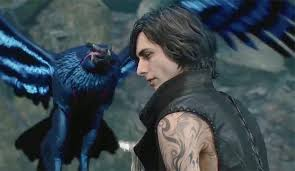
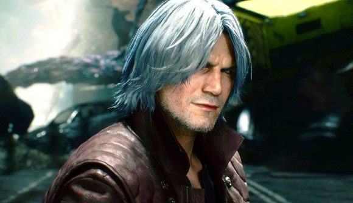

11 years. it took 11 years to get a proper sequel to Devil May Cry 4. Lets address the elephant in the room, The failed reboot DMC. i actually didn’t hate DMC. It was pretty good. The combat was fluid, the story wasn’t that bad, the boss fights were excellent…But that wasnt our Dante. All that’s over with now and the boys are back. Nero, Dante, and the new V. Without out further ado lets get into it.
Graphics
let me tackle this first. This game is fucking b-e-a beautiful. It uses the same engine as the new resident evil 2 and I hope Capcom continues to use this engine for a long time. Now its easy to tell thy used different face models for all the characters.For some reason Dante looks the same, maybe a little older. Nero definitely looks different as well as all the extras. They definitely was going for a more realistic look this time around and i thank them for it. i could go on and on about how good it looks but you should just see for yourself.
Story
The mysterious V hires Dante to kill a demon named Urizen. Urizen has planted a giant demon tree in Redgrave city which is killing everyone. Nero also tags along as his devil bringer arm was cut off by Urizen and he seeks revenge. The games starts as you play as Nero following V to the center of the tree where Urizen, Dante, Lady, and Trish do battle. More like just Dante though as Lady and Trish are knocked out of commission. The story goes backwards in time and back to present time as you play with each character to solve the mysteries of this new demon, V's past, Nero's lineage, and Dante's potential. Also a new character is introduced. The granddaughter of the woman who made Dante's Ebony and Ivory twin pistols. She makes the mechanical weaponized arms Nero utilizes in the game as well as offering some light comic relief.
Gameplay
Did I mention this game looks great. It also plays amazing. If you played past devil may cry games you'll feel right at home. Nero plays like his old 2 arm self pretty much, except with a device called Devil Breakers. A mechanical arm with varying abilities. You get to equip different ones with different abilities. You get 2 abilities. One which is regular, then a charged attack which destroys the arm in the process. You can also manually detach the arm which exploads after a couple of seconds. You also have the ability to also pick up different arms during a mission so experimentation is encouraged. Even though I pretty much used the same 3. His classic sword moves are all here, and his gun packs a little more punch this time around.
V, the new mysterious character plays rather different than the other 2 protagonist. He uses 2 familiar looking familiars. *If you played the other games you know what mean.* They attack on their own or you could input commands to control them. His devil trigger summons a giant golem which usually makes quick work of any surrounding enemies. The only thing is, his familiars can't actually kill any enemies. You have to deal the finishing blow with V yourself. I find that his sections are the easiest amongts the 3.
Dante, Oh Dante you complicated s.o.b. His gameplay is of course the most complicated. To some, the most fun. Like in DMC 4 you can freely switch between his 4 styles on the fly as well as switch weapons to create truly beautiful looking combos. He has some new weapons, Cerberus makes a return. Or should I say king Cerberus. This weapon makes a return but not just with an ice element, it also includes fire and lightning, as well as a staff form. Balrog, the flame gauntlet and greaves. like in previous games, Still very cool and very strong. His classic rebellion is also present as well as the Sparta sword. Saved the best melee for last, his new motorcycle dual blade chainsaws. It's utterly ridiculous and utterly fun. As for his guns he has his classic Ebony and Ivory, his shotgun, lady's missle launcher *which you can dual wield*, and a hat. Yes a hat. It uses red orbs to power up its attacks and in return the enemies drop more red orbs. Late in the game you also get a new devil form. Side missions are littered throughout the levels. Even though I only found 2. They could just be hidden well or I wasn't looking hard enough.
Final thoughts
This game looks great and plays great. V ended up being one of my favorite characters. The game is...kind of easy at first, but with higher difficulty unlocks I'm sure the game gets incredibly frustrating. The game is also kind of short. I get the sense it's definitely meant to play more than once. It's so fun you would want to play it more than once. Especially when you replay with all the abilities you've unlocked. If you haven't played this, no, if you haven't bought this game WHAT THE HELL ARE YOU WAITING FOR!